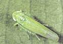

| Home |
| PEST OF TEA |
mAJOR pESTS |
| 1. Tea mosquito bug |
| 2. Mites |
| - Red spider mite |
| - Scarlet mite |
| - Purple mite |
| - Pink mite or orange mite |
| - Yellow mite |
| 3. Shot hole borer |
| 4. Sapling borer |
mINOR pESTS |
| 1. Flushworm |
| 2. Tea tortrix |
| 3. Tea leaf roller |
| 4. Scales |
| 5. Thrips |
| 6. Tea jassid |
| 7. Aphid |
| Questions |
| Download Notes |
TEA :: MAJOR PEST :: TEA JASSID
10. Tea jassid: Empoasca flavescens (Cicadellidae: Hemiptera)
Adults and nymphs suck plant sap from tender leaves. Leaves curl downwards, gradually turn brown and dry up. Severity is more in North Eastern India.Wedge shaped nymphs green, adult yellowish green. Eggs are inserted singly into the leaves. Egg period 6 – 13 days, nymphal period 8 – 10 days